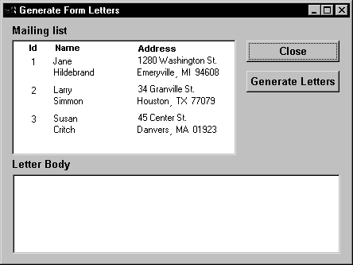

You do not need to place an OLE control on a window to manipulate an OLE object in a script. If the object does not need to be visible in your PowerBuilder application, you can create an OLE object independent of a control, connect to the server application, and call functions and set properties for that object. The server application executes the functions and changes the object's properties, which changes the OLE object.
For some applications, you can specify whether the application is visible. If it is visible, the user can activate the application and manipulate the object using the commands and tools of the server application.
PowerBuilder's OLEObject object type is designed for automation. OLEObject is a dynamic object type, which means that the compiler will accept any property names, function names, and parameter lists for the object. PowerBuilder does not have to know whether the properties and functions are valid. This allows you to call methods and set properties for the object that are known to the server application that created the object. If the functions or properties do not exist during execution, you will get runtime errors.
Using an OLEObject variable involves these steps:
These steps are described next.
You need to declare an OLEObject variable and allocate memory for it:
OLEObject myoleobject
myoleobject = CREATE OLEObject
The Object property of the OLE container controls (OLEControl or OLECustomControl) has a datatype of OLEObject.
You establish a connection between the OLEObject object and an OLE server with one of the ConnectToObject functions. Connecting to an object starts the appropriate server:
After you establish a connection, you can use the server's command set for automation to manipulate the object (see "OLE objects in scripts ").
You do not need to include application qualifiers for the commands. You already specified those qualifiers as the application's class when you connected to the server. For example, the following commands create an OLEObject variable, connect to Microsoft Word 's OLE interface (word.application), open a document and display information about it, insert some text, save the edited document, and shut down the server:
OLEObject o1
string s1
o1 = CREATE oleobject
o1.ConnectToNewObject("word.application")
o1.documents.open("c:\temp\temp.doc")
// Make the object visible and display the
// MS Word user name and file name
o1.Application.Visible = True
s1 = o1.UserName
MessageBox("MS Word User Name", s1)
s1 = o1.ActiveDocument.Name
MessageBox("MS Word Document Name", s1)
//Insert some text in a new paragraph
o1.Selection.TypeParagraph()
o1.Selection.typetext("Insert this text")
o1.Selection.TypeParagraph()
// Insert text at the first bookmark
o1.ActiveDocument.Bookmarks[1].Select
o1.Selection.typetext("Hail!")
// Insert text at the bookmark named End
o1.ActiveDocument.Bookmarks.item("End").Select
o1.Selection.typetext("Farewell!")
// Save the document and shut down the server
o1.ActiveDocument.Save()
o1.quit()
RETURN
For earlier versions of Microsoft Word, use word.basic instead of word.application. The following commands connect to the Microsoft Word 7.0 OLE interface (word.basic), open a document, go to a bookmark location, and insert the specified text:
myoleobject.ConnectToNewObject("word.basic")
myoleobject.fileopen("c:\temp\letter1.doc")
myoleobject.editgoto("NameAddress")
myoleobject.Insert("Text to insert")
Do not include word.application or word.basic (the class in ConnectToNewObject) as a qualifier:
// Incorrect command qualifier
myoleobject.word.basic.editgoto("NameAddress")
 Microsoft Word 7.0 implementation For an OLEObject variable, word.basic is the class name of
Word 7.0 as a server application. For an object in a control, you
must use the qualifier application.wordbasic to tell Word how to
traverse its object hierarchy and access its wordbasic object.
Microsoft Word 7.0 implementation For an OLEObject variable, word.basic is the class name of
Word 7.0 as a server application. For an object in a control, you
must use the qualifier application.wordbasic to tell Word how to
traverse its object hierarchy and access its wordbasic object.
After your application has finished with the automation, you might need to tell the server explicitly to shut down. You can also disconnect from the server and release the memory for the object:
myoleobject.Quit()
rtncode = myoleobject.DisconnectObject()
DESTROY myoleobject
You can rely on garbage collection to destroy the OLEObject variable. Destroying the variable automatically disconnects from the server.
It is preferable to use garbage collection to destroy objects, but if you want to release the memory used by the variable immediately and you know that it is not being used by another part of the application, you can explicitly disconnect and destroy the OLEObject variable, as shown in the code above.
For more information, see "Garbage collection and memory management".
You cannot assign an OLE control (object type OLEControl) or ActiveX control (object type OLECustomControl) to an OLEObject.
If the vendor of the control exposes a programmatic identifier (in the form vendor.application), you can specify this identifier in the ConnectToNewObject function to connect to the programmable interface without the visual control. For an ActiveX control with events, this technique makes the events unavailable. ActiveX controls are not meant to be used this way and would not be useful in most cases.
You can assign the Object property of an OLE control to an OLEObject variable or use it as an OLEObject in a function.
For example, if you have an OLEControl ole_1 and an OLECustomControl ole_2 in a window and you have declared this variable:
OLEObject oleobj_automate
then you can make these assignments:
oleobj_automate = ole_1.Object
oleobj_automate = ole_2.Object
You cannot assign an OLEObject to the Object property of an OLE control because it is read-only. You cannot make this assignment:
ole_1.Object = oleobj_automate //Error!
You can implement events for an OLEObject by creating a user object that is a descendant of OLEObject. The SetAutomationPointer PowerScript function assigns an OLE automation pointer to the descendant so that it can use OLE automation.
Suppose oleobjectchild is a descendant of OLEObject that implements events such as the ExternalException and Error events. The following code creates an OLEObject and an instance of oleobjectchild, which is a user object that is a descendant of OLEObject, connects to Excel, then assigns the automation pointer to the oleobjectchild:
OLEObject ole1
oleobjectchild oleChild
ole1 = CREATE OLEObject
ole1.ConnectToNewObject( "Excel.Application")
oleChild = CREATE oleobjectchild
oleChild.SetAutomationPointer( ole1 )
You can now use olechild for automation.
The steps involved in automation can be included in a single script or be the actions of several controls in a window. If you want the user to participate in the automation, you might:
If the automation does not involve the user, all the work can be done in a single script.
This example takes names and addresses from a DataWindow object and letter body from a MultiLineEdit and creates and prints letters in Microsoft Word using VBA scripting.
 To set up the form letter example:
To set up the form letter example:
Create a Word document called CONTACT.DOC with four bookmarks and save the file in your PowerBuilder directory.
The letter should have the following content:
Multimedia Promotions, Inc.
1234 Technology Drive
Westboro, Massachusetts
January 12, 2003
[bookmark name1]
[bookmark address1]
Dear [bookmark name2]:
[bookmark body]
Sincerely,
Harry Mogul
President
You could enhance the letter with a company and a signature logo. The important items are the names and placement of the bookmarks.
In PowerBuilder, define a DataWindow object called d_maillist that has the following columns:
You can turn on Prompt for Criteria in the DataWindow object so the user can specify the customers who will receive the letters.
Define a window that includes a DataWindow control called dw_mail, a MultiLineEdit called mle_body, and a CommandButton or PictureButton:

Assign the DataWindow object d_maillist to the DataWindow control dw_mail.
Write a script for the window's Open event that connects to the database and retrieves data for the DataWindow object. The following code connects to an Adaptive Server Anywhere database. (When the window is part of a larger application, the connection is typically done by the application Open script.)
/**************************************************
Set up the Transaction object from the INI file
**************************************************/
SQLCA.DBMS=ProfileString("myapp.ini", &
"Database", "DBMS", " ")
SQLCA.DbParm=ProfileString("myapp.ini", &
"Database", "DbParm", " ")
/**************************************************
Connect to the database and test whether the
connect succeeded
**************************************************/
CONNECT USING SQLCA;
IF SQLCA.SQLCode <> 0 THEN
MessageBox("Connect Failed", "Cannot connect" &
+ "to database. " + SQLCA.SQLErrText)
RETURN
END IF
/**************************************************
Set the Transaction object for the DataWindow control and retrieve data
**************************************************/
dw_mail.SetTransObject(SQLCA)
dw_mail.Retrieve()
Write the script for the Generate Letters button (the script is shown below).
The script does all the work, performing the following tasks:
Write a script for the Close button. All it needs is one command:
Close(Parent)
The following script generates and prints the form letters:
OLEObject contact_ltr
integer result, n
string ls_name, ls_addr
/***************************************************
Allocate memory for the OLEObject variable
***************************************************/
contact_ltr = CREATE oleObject
/***************************************************
Connect to the server and check for errors
***************************************************/
result = &
contact_ltr.ConnectToNewObject("word.application")
IF result <> 0 THEN
DESTROY contact_ltr
MessageBox("OLE Error", &
"Unable to connect to Microsoft Word. " &
+ "Code: " &
+ String(result))
RETURN
END IF
/***************************************************
For each row in the DataWindow, send customer
data to Word and print a letter
***************************************************/
FOR n = 1 to dw_mail.RowCount()
/************************************************
Open the document that has been prepared with
bookmarks
************************************************/
contact_ltr.documents.open("c:\pbdocs\contact.doc")
/************************************************
Build a string of the first and last name and
insert it into Word at the name1 and name2
bookmarks
************************************************/
ls_name = dw_mail.GetItemString(n, "first_name")&
+ " " + dw_mail.GetItemString(n, "last_name")
contact_ltr.Selection.goto("name1")
contact_ltr.Selection.typetext(ls_name)
contact_ltr.Selection.goto("name2")
contact_ltr.Selection.typetext(ls_name)
/************************************************
Build a string of the address and insert it into
Word at the address1 bookmark
************************************************/
ls_addr = dw_mail.GetItemString(n, "street") &
+ "~r~n" &
+ dw_mail.GetItemString(n, "city") &
+ ", " &
+ dw_mail.GetItemString(n, "state") &
+ " " &
+ dw_mail.GetItemString(n, "zip")
contact_ltr.Selection.goto("address1")
contact_ltr.Selection.typetext(ls_addr)
/************************************************
Insert the letter text at the body bookmark
***********************************************/
contact_ltr.Selection.goto("body")
contact_ltr.Selection.typetext(mle_body.Text)
/************************************************
Print the letter
************************************************/
contact_ltr.Application.printout()
/************************************************
Close the document without saving
************************************************/
contact_ltr.Documents.close
contact_ltr.quit()
NEXT
/***************************************************
Disconnect from the server and release the memory for the OLEObject variable
***************************************************/
contact_ltr.DisconnectObject()
DESTROY contact_ltr
To run the example, write a script for the Application object that opens the window or use the Run/Preview button on the PowerBar.
When the application opens the window, the user can specify retrieval criteria to select the customers who will receive letters. After entering text in the MultiLineEdit for the letter body, the user can click on the Generate Letters button to print letters for the listed customers.